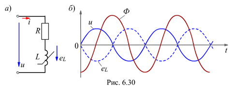
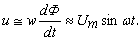
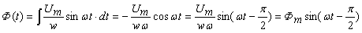

6.4.1.2. Электромагнитные процессы в катушке со сталью
Анализ электромагнитных процессов в катушке со сталью при приложении к ней синусоидального напряжения
u = Umsinwt проведем, используя упрощённую схему замещения катушки (рис. 6.30, а) с линейным элементом R (резистивное сопротивление обмотки) и нелинейным элементом L. Вебер-амперная характеристика нелинейного элемента подобна кривой намагничивания В(Н), если не учитывается гистерезис, т. к. L = Y / i » w2mm0S / lM, где Y = w(Ф + ФР) – потокосцепление катушки.

Для упрощения анализа будем пренебрегать потоком рассеяния ФР, как и гистерезисом и активными потерями в стали. При протекании в магнитопроводе переменного магнитного потока Ф(t) (потокосцепления Y(t) = wФ(t)) в катушке индуктируется ЭДС самоиндукции
eL = - dY (t) / dt = - wd[Ф(t)] / dt.
Согласно второму закону Кирхгофа (см. рис. 6.30, а) имеем
Ri - eL = Ri + wd [Ф(t)] / dt = u = Umsinwt.
Пренебрегая активным сопротивлением R обмотки, получим
 Откуда
.
Анализ полученного выражения показывает, что переменный магнитный поток Ф(t) в идеализированной катушке с ферромагнитным сердечником отстает по фазе от приложенного к катушке напряжения u на угол p/2 и является синусоидальным по форме.
Амплитуда магнитного потока Фm = Um /(ww) = Um / (2pfw) не зависит от магнитных свойств сердечника катушки – в этом принципиальное отличие магнитных цепей с синусоидальной МДС от магнитных цепей с постоянной МДС. ЭДС самоиндукции eL = - w[dФ(t)/(dt)] = - Umsinwt находится в противофазе к питающему катушку напряжению u, т. е. отстает от него по фазе на угол p, а от магнитного потока Ф(t) - на угол p/2.
Графики зависимостей u(t), Ф(t) и eL(t) изображены на рис. 6.30, б.